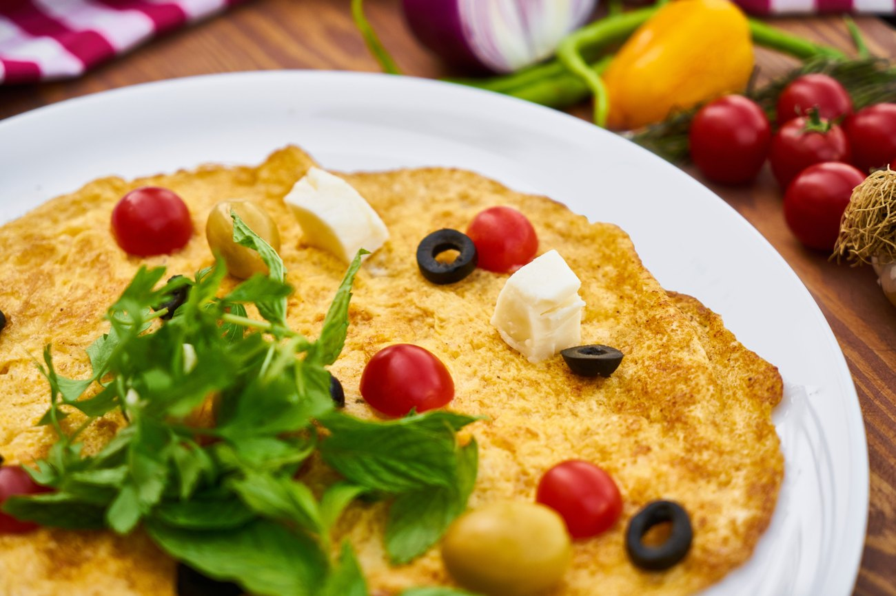
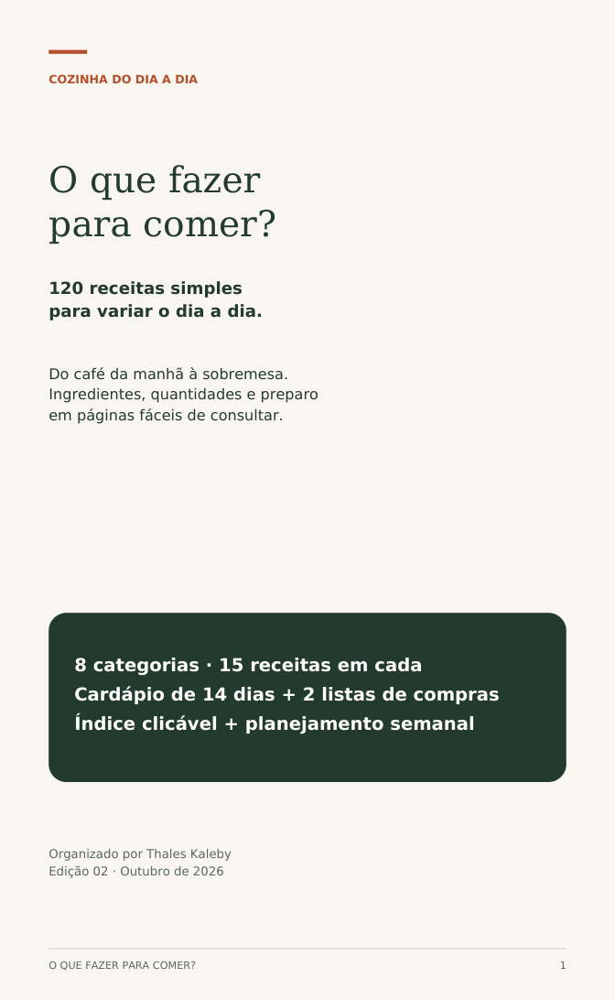
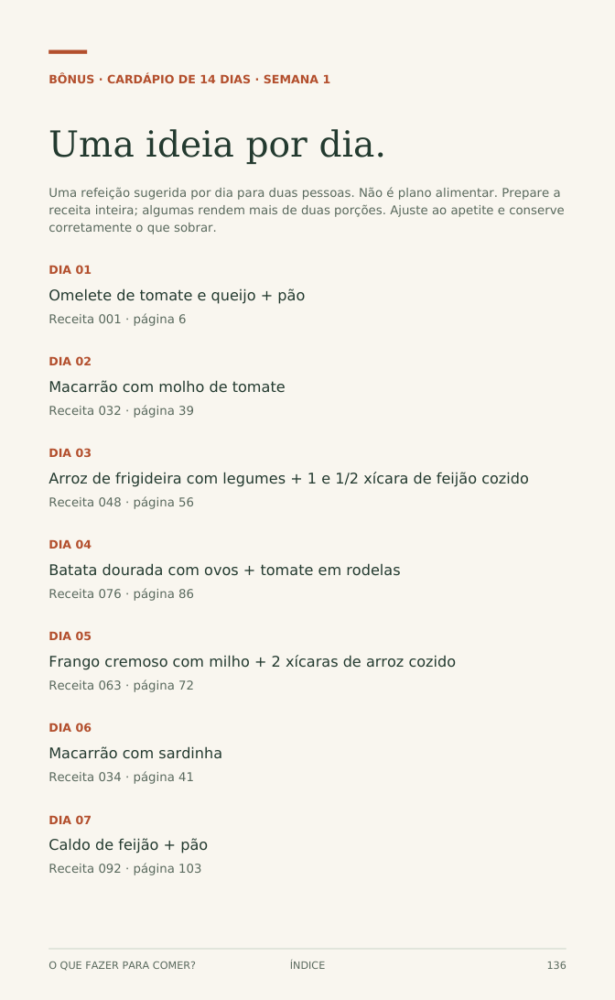
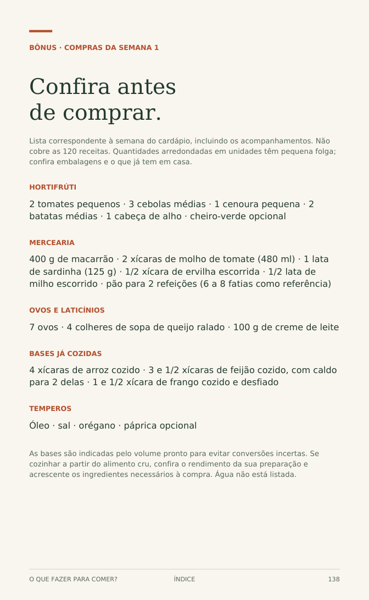

O QUE FAZER PARA COMER?
120 receitas.
Uma nova ideia
para cada dia.
Sai o “não sei o que fazer”. Entram opções do café da manhã à sobremesa, com ingredientes, quantidades e passo a passo.
Seu PDF inclui cardápio de 14 dias, duas listas de compras e planejamento semanal.
Quero as 120 receitas · R$7,99Pagamento único · PDF no celular
Pedido e entrega pelo WhatsApp

Hoje temuma nova ideia.

142 páginas para consultar no celular.DO PRIMEIRO CAFÉ À SOBREMESA
Um guia.
Muitas possibilidades.
São 8 categorias com 15 receitas em cada. Abra uma categoria e veja as opções que vêm no seu PDF.
01Café da manhã & ovos15 receitas · Omelete de tomate e queijo e Ovos mexidos com queijo
- Omelete de tomate e queijo
- Ovos mexidos com queijo
- Tapioca de queijo e tomate
- Crepioca de espinafre
- Cuscuz com ovo e tomate
- Panqueca de banana e aveia
- Pão de queijo de frigideira
- Mingau de aveia com maçã
- Aveia de geladeira com banana
- Iogurte com frutas e aveia
- Torradas de tomate
- Ovos no molho de tomate
- Batata-doce com ovo e cebola
- Vitamina de banana e aveia
- Granola de frigideira
02Lanches para variar15 receitas · Sanduíche quente de frigideira e Patê de atum para pão
- Sanduíche quente de frigideira
- Patê de atum para pão
- Pastel de forno de ricota
- Wrap de frango com cenoura
- Bolinho de arroz assado
- Torta de legumes de liquidificador
- Pizza de pão de forma
- Pãozinho de batata de forno
- Hambúrguer de lentilha
- Sanduíche de grão-de-bico
- Tortilha dobrada de queijo e feijão
- Batata recheada de frango
- Pipoca com páprica
- Pão com pasta de ricota e ervas
- Palitos de polenta assados
03Massas & forno15 receitas · Macarrão com alho e cenoura e Macarrão com molho de tomate
- Macarrão com alho e cenoura
- Macarrão com molho de tomate
- Macarrão cremoso de milho
- Macarrão com sardinha
- Macarrão com atum e limão
- Macarrão com brócolis
- Penne com frango desfiado
- Macarrão de uma panela
- Salada de macarrão com legumes
- Panqueca de queijo e tomate
- Lasanha de frango
- Nhoque de batata
- Talharim com manteiga e ervas
- Macarrão de forno com ervilha
- Macarrão com abobrinha e ricota
04Arroz, feijão & grãos15 receitas · Arroz branco soltinho e Arroz integral básico
- Arroz branco soltinho
- Arroz integral básico
- Arroz de frigideira com legumes
- Arroz de forno com queijo
- Arroz com lentilha e cebola
- Arroz com frango e cenoura
- Arroz cremoso com abóbora
- Risoto simples de queijo
- Feijão básico com caldo
- Lentilha com cenoura
- Grão-de-bico ao molho
- Feijão com farinha e couve
- Salada de grão-de-bico
- Salada de feijão-fradinho
- Cuscuz de milho com legumes
05Frango, carnes & peixes15 receitas · Filé de frango com limão e Frango em cubos ao molho
- Filé de frango com limão
- Frango em cubos ao molho
- Frango cremoso com milho
- Frango empanado de forno
- Sobrecoxas com batatas
- Carne moída com legumes
- Bolinho de carne assado
- Almôndegas ao molho
- Hambúrguer caseiro de carne
- Bife acebolado
- Iscas de carne com pimentão
- Peixe de forno com tomate
- Peixe de frigideira
- Bolinho de sardinha assado
- Lombo suíno em cubos com cebola
06Legumes & saladas15 receitas · Batata dourada com ovos e Purê de batata com cenoura
- Batata dourada com ovos
- Purê de batata com cenoura
- Abóbora assada com alho
- Abobrinha refogada
- Berinjela de forno com tomate
- Cenoura com mel e limão
- Brócolis gratinado
- Couve com alho
- Farofa de banana
- Salada cremosa de repolho
- Vinagrete simples
- Salada de batata com ervas
- Salada de beterraba e laranja
- Legumes assados coloridos
- Refogado de berinjela e abobrinha
07Sopas & caldos15 receitas · Sopa simples de legumes e Caldo de feijão
- Sopa simples de legumes
- Caldo de feijão
- Creme de abóbora
- Caldo de mandioca
- Caldo verde com couve
- Canja com frango
- Sopa de macarrão com legumes
- Creme de ervilha
- Sopa de lentilha
- Sopa de tomate
- Creme de milho
- Creme de mandioquinha
- Sopa de grão-de-bico e espinafre
- Aveia salgada com ovo
- Polenta cremosa com molho de tomate
08Bolos & sobremesas15 receitas · Bolo de banana e Bolo de chocolate
- Bolo de banana
- Bolo de chocolate
- Bolo de fubá
- Bolo de cenoura
- Bolo de caneca de chocolate
- Arroz-doce
- Canjica cremosa
- Brigadeiro de colher
- Beijinho de colher
- Mousse de maracujá
- Creme de limão
- Pudim de pão
- Banana caramelizada
- Maçã assada com canela
- Gelatina com frutas
DÊ UMA OLHADA ANTES DE LEVAR
Antes de comprar,
experimente uma ideia.
Arroz, ovos, macarrão, batata… Do café da manhã à sobremesa, o guia organiza preparos conhecidos em passos curtos, para você escolher sem ficar procurando receita de um lado para o outro.
Escolha uma opção e veja uma receita completa do PDF.
Omelete de tomate e queijo
Ingredientes
- 4 ovos
- 1 tomate pequeno picado
- 4 colheres (sopa) de queijo ralado
- 1 colher (chá) de óleo
- sal e orégano a gosto
Preparo
- Bata os ovos e misture tomate, queijo, sal e orégano.
- Aqueça o óleo em frigideira antiaderente. Despeje a mistura, tampe e cozinhe em fogo baixo por 5 a 7 minutos.
- Vire com a ajuda de um prato e cozinhe até o centro ficar firme e os ovos totalmente cozidos.
Retire as sementes do tomate se ele estiver muito úmido. Sirva com pão ou salada.
DA DÚVIDA AO PREPARO
Seu próximo prato
começa assim.
Veja o que tem em casa.
Comece pelos ingredientes disponíveis e escolha uma das categorias.
Abra a receita.
Use o índice clicável. Confira rendimento, quantidades e preparo antes de começar.
Prepare no seu ritmo.
Consulte o PDF no celular. Para organizar os próximos dias, use o cardápio e as listas.


Páginas reais do seu PDFTUDO NO MESMO ARQUIVO
A receita é só
o começo.
Cardápio de 14 dias
Uma sugestão de refeição por dia para duas pessoas. Adapte ao que você tem em casa.
Duas listas de compras
Uma lista para cada semana do cardápio, incluindo os acompanhamentos. Confira a despensa antes de comprar.
Seu planejamento semanal
Uma folha para organizar as refeições e conferir o que já tem em casa.
Seleção rápida e trocas
39 receitas com tempo estimado de até 20 minutos, além de sugestões para variar ingredientes. Algumas usam bases já cozidas.
SEU GUIA PARA CONSULTAR SEMPRE
As 120 receitas.
Todos os bônus.
Seu próximo preparo.
120 receitas simples, o cardápio e duas listas de compras. Um único PDF para abrir quando bater a dúvida.
- 120 receitas em 8 categorias
- 142 páginas com índice clicável
- Cardápio de 14 dias + duas listas de compras
- Seleção rápida, trocas e planejamento semanal
O GUIA COMPLETO POR
R$7,99
Pagamento único. Sem mensalidade.
Quero as 120 receitas · R$7,99Você será direcionado ao WhatsApp para combinar o pagamento. Após a confirmação, receberá o PDF na conversa.
COMPRE COM TRANQUILIDADE
7 dias para
decidir.
Se o guia não atender à sua expectativa, você pode solicitar reembolso em até 7 dias após a compra.
Fale pelo WhatsApp (53) 99125-7648 e informe os dados do pedido. O prazo de processamento depende do meio de pagamento.
Pagamento único · Produto digital · Suporte diretoÉ um livro físico?
É um produto digital em PDF, com 142 páginas. Você pode ler no celular, tablet ou computador e imprimir para uso pessoal se preferir.
Como compro e recebo?
Toque no botão de compra para abrir o WhatsApp. Você combina o pagamento de R$7,99 e, após a confirmação, recebe o arquivo na própria conversa. A entrega depende do atendimento; não é um download automático.
Preciso saber cozinhar?
Os preparos são simples, com ingredientes e instruções passo a passo. É preciso ter familiaridade básica com fogão e utensílios. Algumas receitas usam forno, liquidificador ou cuscuzeira.
Todas as receitas são refeições completas?
O guia reúne pratos principais, lanches e acompanhamentos. As porções variam e estão indicadas em cada receita. Os tempos são estimativas; receitas com arroz, feijão ou frango cozidos partem desses ingredientes já prontos.
Tem assinatura ou cobrança depois?
Não. O valor é R$7,99 em pagamento único pelo PDF e pelos bônus apresentados nesta página.